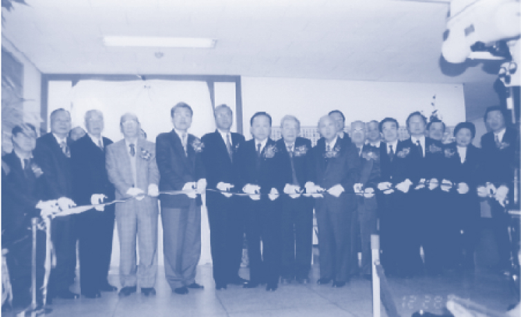
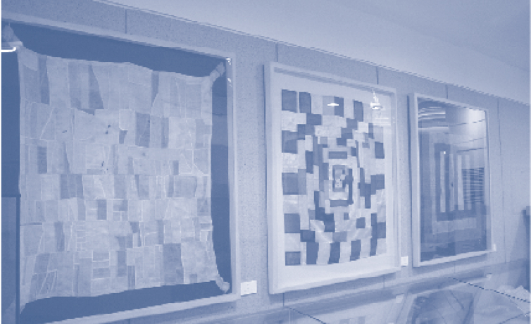

Seoul National University Dental Museum History
20년을 디딤돌로 100년을 준비해 나아갑니다.



1994
- 1994. 8. 31. 서울대학교 치과대학 부설기관으로 개설
~ 2004
- 2000. 5. 21. 치의학박물관 규정 제정
- 2000. 7. 18. 초대 치의학박물관 관장 한수부 교수 취임
- 2001. 12. 27. 전시실 시설 공사 및 전시물 선정과 전시 완료
- 2001. 12. 28. 치의학 박물관 개관(105.35m2, 31.87평)
- 2003. 6. 20. 소공동 교사 모형 제막식
~ 2009
- 2005. 12. 29. 치의학박물관 확장 재개관(49.6m2, 15평)
- 2006. 4. 28. 박물관 등록(서울특별시 제25호)
- 2007. 10. 16. ~ 31. 세계 각국의 치과의원 안내 간판 사진전
- 2008. 6. 9. ~ 20. 2008년 구강보건의 날 기념 특별전 “이 기쁜 날에”
- 2008. 9. 23. 박물관 명칭 변경(서울대학교 치의학대학원 치의학박물관) 제66호
- 2008. 10. 20. 어린이 치과박물관 개관(77.53m2, 23.45평)
- 2008. 12. 10. ~ 1. 9. 고 김주환 동문 소장품전(1차) - 서울 치대 제1회 졸
- 2009. 1. 12 ~ 2. 11. 고 지헌택동문 소장품전(2차) - 서울 치대 제1회 졸
- 2009. 2. 13. ~ 3. 12. 고 백순제 동문 소장품전(3차) - 서울 치대 제1회 졸
- 2009. 3. 5. 서울시 교육청 어린이 현장 체험학습 기관 선정
- 2009. 3. 18. ~ 4. 17. 고 변종수 동문 소장품전(4차) - 서울 치대 제1회 졸
- 2009. 4. 22. ~ 5. 21. 고 안형규 동문 소장품전(5차) - 서울 치대 제1회 졸
- 2009. 6. 5. ~ 8. 7. 2009년 구강보건의 날 기념 특별전: 꿈과 이야기가 있는 치과의사 인형전
- 2009. 9. 10. ~ 10. 9. 유양석 동문 소장품전(6차) - 서울 치대 제3회 졸
~ 2017
- 2010. 1. 8. ~ 2. 5. 고 이춘근 동문 소장품전(7차) - 경치전 제12회 졸
-
2010. 6. 4. ~ 7. 30.
2010년 구강보건의 날 기념 특별전: 이렇게 아름다울 수가 -
규방문화를 세계에 알린 박영숙전(제9회 졸) - 2011. 6. 1. ~ 6. 10. 2011년 구강보건의 날 기념 특별전: 2080 구강건강 체험전
- 2017. 10. 24. 경성치과의학교의 시간과 공간 이야기 발간(경성치과의학교의 터 표석 설치)
~ 현재
- 2021. 8. ~ 12. 치의학박물관 수장고 확장
- 2022. 3. 24 경기도치과의사회 치의학역사관 유물 인수식
-
2022. 10. 14.
서울대학교 치의학대학원 개학 100주년 및 치의학박물관 개관 20주년 기념 전시실 개편
서울대학교 치의학대학원 치의학박물관 개관 20주년 기념 도록 편찬
김명국 동문 소장품전(8차) - 서울 치대 제12회 졸업 -
2023. 7. 6.
특별기획전 ‘나누는 삶, 치과의사의 비전’
제9회 동문 기획전(故 유동수, 치대 제10회)